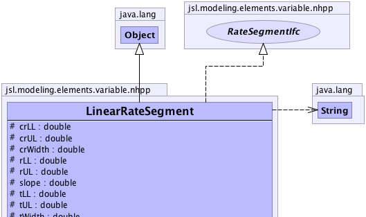
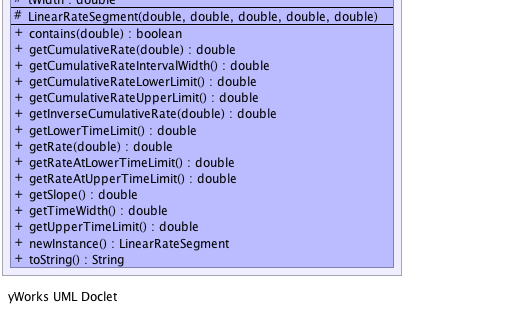

jsl.modeling.elements.variable.nhpp.LinearRateSegment
jsl.modeling.elements.variable.nhpp.LinearRateSegment
|
||||||||||
| PREV CLASS NEXT CLASS | FRAMES NO FRAMES | |||||||||
| SUMMARY: NESTED | FIELD | CONSTR | METHOD | DETAIL: FIELD | CONSTR | METHOD | |||||||||
java.lang.Object
public class LinearRateSegment
|  |
|  |
| Field Summary | |
|---|---|
protected double |
crLL
the lower limit of the interval on cumulative rate scale |
protected double |
crUL
the upper limit of the interval on the cumulative rate scale |
protected double |
crWidth
the width of the interval on the cumulative rate scale (crWidth = crUL - crLL) |
protected double |
rLL
the rate at the lower limit of the interval |
protected double |
rUL
the rate at the upper limit of the interval |
protected double |
slope
the slope for the interval |
protected double |
tLL
the lower limit of the interval on the time scale |
protected double |
tUL
the upper limit of the interval on the time scale |
protected double |
tWidth
the width of the interval on the time scale (tWidth = tUL - tLL) |
| Constructor Summary | |
|---|---|
protected |
LinearRateSegment(double cumRateLL,
double timeLL,
double rateLL,
double timeUL,
double rateUL)
|
| Method Summary | |
|---|---|
boolean |
contains(double time)
Returns true if the supplied time is within this rate segments time interval |
double |
getCumulativeRate(double time)
Returns the value of the cumulative rate function for the interval given a value of time within that interval |
double |
getCumulativeRateIntervalWidth()
The cumulative rate interval width |
double |
getCumulativeRateLowerLimit()
The lower limit on the cumulative rate axis |
double |
getCumulativeRateUpperLimit()
The upper limit on the cumulative rate axis |
double |
getInverseCumulativeRate(double cumRate)
Returns the inverse of the cumulative rate function given the interval and a cumulative rate value within that interval. |
double |
getLowerTimeLimit()
The lower time limit |
double |
getRate(double time)
Returns the rate for the interval |
double |
getRateAtLowerTimeLimit()
The rate at the time that the time interval begins |
double |
getRateAtUpperTimeLimit()
The rate at the time that the time interval ends |
double |
getSlope()
|
double |
getTimeWidth()
The width of the interval |
double |
getUpperTimeLimit()
The upper time limit |
LinearRateSegment |
newInstance()
Returns a new instance of the rate segment |
java.lang.String |
toString()
|
| Methods inherited from class java.lang.Object |
|---|
clone, equals, finalize, getClass, hashCode, notify, notifyAll, wait, wait, wait |
| Field Detail |
|---|
protected double slope
protected double rLL
protected double rUL
protected double crWidth
protected double crLL
protected double crUL
protected double tWidth
protected double tLL
protected double tUL
| Constructor Detail |
|---|
protected LinearRateSegment(double cumRateLL,
double timeLL,
double rateLL,
double timeUL,
double rateUL)
| Method Detail |
|---|
public LinearRateSegment newInstance()
RateSegmentIfc
newInstance in interface RateSegmentIfcpublic boolean contains(double time)
RateSegmentIfc
contains in interface RateSegmentIfcpublic double getSlope()
public double getRate(double time)
RateSegmentIfc
getRate in interface RateSegmentIfcpublic double getRateAtLowerTimeLimit()
RateSegmentIfc
getRateAtLowerTimeLimit in interface RateSegmentIfcpublic double getRateAtUpperTimeLimit()
RateSegmentIfc
getRateAtUpperTimeLimit in interface RateSegmentIfcpublic double getLowerTimeLimit()
getLowerTimeLimit in interface RateSegmentIfcpublic double getUpperTimeLimit()
getUpperTimeLimit in interface RateSegmentIfcpublic double getTimeWidth()
getTimeWidth in interface RateSegmentIfcpublic double getCumulativeRateLowerLimit()
getCumulativeRateLowerLimit in interface RateSegmentIfcpublic double getCumulativeRateUpperLimit()
getCumulativeRateUpperLimit in interface RateSegmentIfcpublic double getCumulativeRateIntervalWidth()
getCumulativeRateIntervalWidth in interface RateSegmentIfcpublic double getCumulativeRate(double time)
getCumulativeRate in interface RateSegmentIfctime -
public double getInverseCumulativeRate(double cumRate)
getInverseCumulativeRate in interface RateSegmentIfccumRate -
public java.lang.String toString()
toString in class java.lang.Object
|
||||||||||
| PREV CLASS NEXT CLASS | FRAMES NO FRAMES | |||||||||
| SUMMARY: NESTED | FIELD | CONSTR | METHOD | DETAIL: FIELD | CONSTR | METHOD | |||||||||